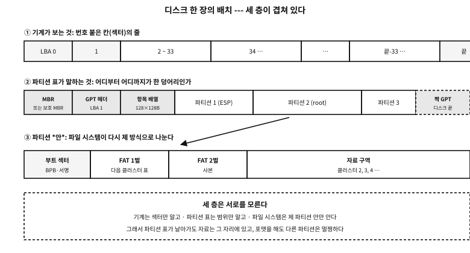
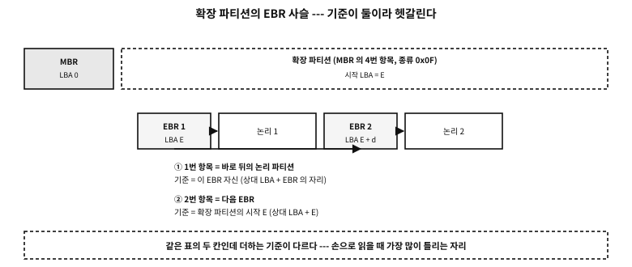
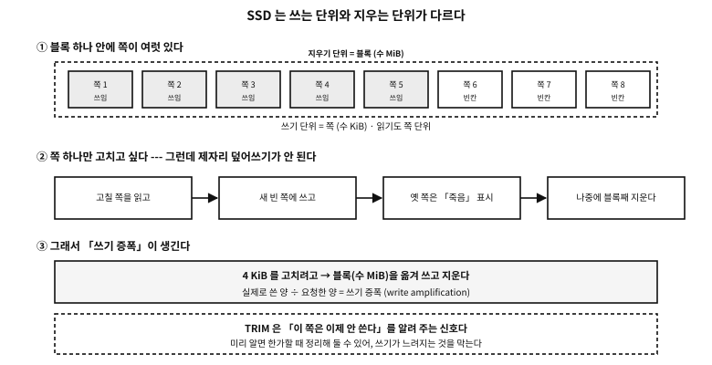

부록 N — 디스크는 어떻게 나뉘어 있는가
컴퓨터를 쓰다 보면 이런 말들을 만난다. 「파티션을 나눈다」, 「포맷한다」, 「MBR 이 깨졌다」, 「GPT 로 바꿔야 한다」. 무슨 뜻인지 어렴풋이 알면서도, 디스크 위에 실제로 무엇이 어떻게 적혀 있는지는 대개 모른 채 지나간다.
이 부록은 그 바이트들을 연다. 그리고 이 책의 규율대로, 표로 적은 구조를 예제가 실제로 지어 보이고 되읽어 증언한다.
플랫폼 노트. 이 부록의 근거와 한계
구조의 권위는 각 규격이다 — MBR 은 관습과 각 운영체제의 문서, GPT 는 UEFI 명세, FAT 는 마이크로소프트의 FAT 규격. 여기 적은 것은 그 초입에 해당하는 사실들이고, 실제 도구를 만들 때는 규격을 보아야 한다.
이 기계의 디스크는 읽지 않았다. 남의 기계 사정을 문서에 남기지 않는다는 규율 때문이다. 대신 예제가 규격대로 바이트를 지어 보이고, 그 바이트를 다시 읽어 해독한다.
먼저 알아 둘 낱말#
뒤에서 이 낱말만 쓴다. 지금 정확히 못 외워도 좋다 — 표로 돌아오면 된다.
| 낱말 | 뜻 | 비유하자면 |
|---|---|---|
| 섹터(sector) | 디스크가 읽고 쓰는 가장 작은 칸. 보통 512바이트 | 공책의 한 줄 |
| LBA | 섹터에 0 부터 붙인 번호(logical block addressing) | 줄 번호 |
| CHS | 실린더·머리·섹터로 자리를 부르던 옛 방식 | 「몇 권 몇 쪽 몇 줄」 |
| 파티션(partition) | 디스크를 나눈 한 덩어리. 「몇 번 섹터부터 몇 섹터」일 뿐이다 | 공책에 그은 칸막이 |
| 파티션 표 | 그 칸막이의 목록. 디스크 앞머리에 적힌다 | 공책 첫 장의 차례 |
| 볼륨(volume) | 운영체제가 하나의 저장 공간으로 다루는 것 | 「D 드라이브」 |
| 파일 시스템 | 파티션 안에서 파일과 폴더를 관리하는 방식(FAT32, ext4 …) | 칸 안의 정리 규칙 |
| 포맷(format) | 파티션 안에 파일 시스템의 기본 구조를 새로 적는 일 | 칸 안을 비우고 새 양식을 그림 |
| 마운트(mount) | 그 파일 시스템을 운영체제의 어느 자리에 붙여 쓰는 일 | 칸을 책상 위에 펴 놓음 |
표 105.1 — 이 부록에서 쓰는 낱말
흔한 오해. 포맷하면 자료가 지워진다
디스크는 번호 붙은 칸의 줄이다#
기계가 아는 것은 아주 단순하다. 디스크는 섹터의 줄이고, 각 섹터에는 0 부터 번호가 있다. 「3번 섹터를 읽어라」, 「7번 섹터에 이 512바이트를 써라」 — 장치가 아는 명령은 사실상 이것뿐이다.
파티션도 파일 시스템도 그 줄 위에 약속으로 얹힌 것이다. 디스크는 자기가 어떻게 나뉘어 있는지 모른다.

그림 105.1 — 디스크 한 장에 겹쳐 있는 세 층 — 섹터의 줄, 파티션 표, 파일 시스템.
옛날에는 자리를 CHS 로 불렀다. 실린더 몇 번, 머리 몇 번, 섹터 몇 번. 디스크가 정말로 접시 여러 장이던 시절의 이름이다. 지금은 전부 LBA 로 부른다 — 그냥 번호다.
| 부르는 이름 | 물리 섹터 | 논리 섹터 | 무엇이 달라지나 |
|---|---|---|---|
| 512n | 512바이트 | 512바이트 | 옛 디스크. 둘이 같다 |
| 512e | 4096바이트 | 512바이트 | 속은 4 KiB 인데 512 인 척한다 — 정렬이 어긋나면 느려진다 |
| 4Kn | 4096바이트 | 4096바이트 | 숨김 없이 4 KiB. 옛 소프트웨어가 못 읽는 일이 있다 |
표 105.2 — 섹터 크기의 세 갈래
문. 512e 에서 정렬이 어긋나면 왜 느려지는가?
답. 디스크가 실제로 다루는 덩어리는 4 KiB 인데 소프트웨어가 512바이트 단위로 어긋난 자리에 쓰면, 장치는 4 KiB 를 읽어 → 그 안의 512바이트를 고쳐 → 다시 4 KiB 를 쓴다(읽기-수정-쓰기). 쓰기 한 번이 세 번의 일이 된다. 파티션을 2048섹터(=1 MiB)에서 시작시키는 오늘날의 관례가 이것을 피하려는 것이다.
왜 나누는가#
디스크 한 장을 통째로 쓰면 안 되는가? 되기도 한다. 그런데 나누는 이유가 있다.
- 여러 운영체제를 함께 둔다. 각자 제 파일 시스템을 쓴다.
- 성질이 다른 자료를 가른다. 스왑, 시스템, 개인 자료. 하나가 가득 차도 다른 쪽은 산다.
- 부팅에 필요한 자리를 따로 둔다. UEFI 의 ESP 처럼 펌웨어가 읽을 수 있는 파일 시스템이어야 하는 자리가 있다.
- 복구와 백업의 단위가 된다. 파티션 하나만 통째로 떠 두는 식으로.
MBR — 첫 섹터 512바이트에 다 적는다#
가장 오래된 방식이다. 디스크의 0번 섹터 하나에 부팅 코드와 파티션 표를 다 넣는다.
| 오프셋 | 크기 | 이름 | 무엇 | 전형적인 값 |
|---|---|---|---|---|
0x000 | 446 | 부트스트랩 코드 | 부팅할 때 CPU 가 실행하는 첫 코드. 부트로더의 첫 조각밖에 못 들어간다 | 기계 명령 |
0x1B8 | 4 | 디스크 서명 | 윈도우가 디스크를 알아보는 번호(옛 MBR 에는 없다) | 임의의 4바이트 |
0x1BC | 2 | 예약 | 보통 0 | 00 00 |
0x1BE | 16 | 파티션 항목 1 | 아래 표 105.4 참조 | — |
0x1CE | 16 | 파티션 항목 2 | 〃 | — |
0x1DE | 16 | 파티션 항목 3 | 〃 | — |
0x1EE | 16 | 파티션 항목 4 | 〃 | — |
0x1FE | 2 | 부팅 서명 | 이것이 없으면 BIOS 가 부팅 섹터로 인정하지 않는다 | 55 AA |
표 105.3 — MBR 512바이트의 전체 자리
★ 표의 첫 줄과 마지막 줄이 이 방식의 성격을 다 말한다. 부팅 코드와 디스크의 배치도가 같은 512바이트를 나눠 쓴다. 그래서 코드는 446바이트뿐이고, 파티션은 넷뿐이다.
파티션 항목 16바이트#
| 오프셋 | 크기 | 이름 | 무엇 | 전형적인 값 |
|---|---|---|---|---|
+0 | 1 | 부팅 표시 | 0x80 이면 「여기서 부팅」, 0x00 이면 아님. 그 밖의 값은 잘못된 것 | 80 또는 00 |
+1 | 3 | 시작 CHS | 옛 방식의 시작 자리. 요즘은 읽지 않는다 | FE FF FF |
+4 | 1 | 파티션 종류 | 무엇이 들었는지의 힌트 한 바이트(표 105.6) | 83, 07, 0C … |
+5 | 3 | 끝 CHS | 옛 방식의 끝 자리. 역시 안 읽는다 | FE FF FF |
+8 | 4 | 시작 LBA | 진짜로 쓰이는 값. 이 파티션이 시작하는 섹터 번호 | 2048 |
+12 | 4 | 섹터 수 | 진짜로 쓰이는 값. 이 파티션의 길이 | 2097152(=1 GiB) |
표 105.4 — MBR 파티션 항목 16바이트
CHS 세 바이트에 값이 어떻게 실리는배치도 적어 둔다. 이 비좁음이 옛 한계의 원인이다.
| 바이트 | 비트 | 무엇 | 범위 |
|---|---|---|---|
+0 | 7~0 | 머리(head) | 0~255 |
+1 | 7~6 | 실린더의 위 2비트 | 실린더는 모두 10비트 |
+1 | 5~0 | 섹터(sector) | 1~63 — 0 은 없다 |
+2 | 7~0 | 실린더의 아래 8비트 | 0~1023 |
표 105.5 — CHS 3바이트의 비트 배치
examples/apx-disk/mbr_detail.c
/* MBR 을 필드 단위로 짓고 되읽는다 --- 표에 적은 오프셋이 진짜인지 코드가 증언한다.
주의: 디스크를 건드리지 않는다. 기억 속 배열만 채우고 다시 읽어 화면에 찍는다. */
#include <stdio.h>
#include <stdint.h>
#include <string.h>
#define SEC 512u
static void put32(unsigned char *p, uint32_t v)
{ p[0] = v & 0xff; p[1] = v >> 8 & 0xff; p[2] = v >> 16 & 0xff; p[3] = v >> 24; }
static uint32_t get32(const unsigned char *p)
{ return (uint32_t)p[0] | (uint32_t)p[1] << 8 | (uint32_t)p[2] << 16 | (uint32_t)p[3] << 24; }
/* CHS 는 3바이트에 실린다: 머리 8비트, 실린더 10비트, 섹터 6비트.
실린더의 위 두 비트가 섹터 바이트의 위 두 비트로 올라간다 --- 그 비좁음이 한계를 만든다. */
static void put_chs(unsigned char *p, uint32_t cyl, uint32_t head, uint32_t sect)
{
if (cyl > 1023) { p[0] = 0xfe; p[1] = 0xff; p[2] = 0xff; return; } /* 못 적으면 관용값 */
p[0] = (unsigned char)head;
p[1] = (unsigned char)(((cyl >> 2) & 0xc0) | (sect & 0x3f));
p[2] = (unsigned char)(cyl & 0xff);
}
static void get_chs(const unsigned char *p, unsigned *cyl, unsigned *head, unsigned *sect)
{ *head = p[0]; *sect = p[1] & 0x3f; *cyl = ((unsigned)(p[1] & 0xc0) << 2) | p[2]; }
static void put_part(unsigned char *e, uint8_t boot, uint8_t type,
uint32_t lba, uint32_t count)
{
e[0] = boot;
put_chs(e + 1, lba / (255 * 63), (lba / 63) % 255, lba % 63 + 1);
e[4] = type;
put_chs(e + 5, (lba + count - 1) / (255 * 63), ((lba + count - 1) / 63) % 255,
(lba + count - 1) % 63 + 1);
put32(e + 8, lba);
put32(e + 12, count);
}
static const char *type_name(uint8_t t)
{
switch (t) {
case 0x00: return "empty";
case 0x05: return "extended (CHS)";
case 0x07: return "NTFS / exFAT";
case 0x0b: return "FAT32 (CHS)";
case 0x0c: return "FAT32 (LBA)";
case 0x0e: return "FAT16 (LBA)";
case 0x0f: return "extended (LBA)";
case 0x82: return "Linux swap";
case 0x83: return "Linux";
case 0xee: return "GPT protective MBR";
case 0xef: return "EFI system partition";
default: return "other";
}
}
static void show_entry(const char *tag, const unsigned char *e, uint32_t base)
{
unsigned c0, h0, s0, c1, h1, s1;
get_chs(e + 1, &c0, &h0, &s0);
get_chs(e + 5, &c1, &h1, &s1);
uint32_t rel = get32(e + 8), cnt = get32(e + 12);
if (e[4] == 0 && cnt == 0) { printf(" %-10s (empty)\n", tag); return; }
printf(" %-10s bootable=%s type=0x%02x (%s)\n", tag, e[0] == 0x80 ? "yes" : "no",
e[4], type_name(e[4]));
printf(" start LBA=%u (relative) -> %u (absolute) size=%u sectors = %.1f MiB\n",
rel, base + rel, cnt, cnt * (double)SEC / (1024 * 1024));
printf(" CHS start=(%u,%u,%u) end=(%u,%u,%u)%s\n",
c0, h0, s0, c1, h1, s1,
(e[1] == 0xfe && e[2] == 0xff) ? " <- beyond what CHS can express (the idiomatic value)" : "");
}
int main(void)
{
unsigned char mbr[SEC] = { 0 };
/* ── 주 파티션 넷 중 셋 + 확장 하나 ─────────────────────────── */
put_part(mbr + 0x1be, 0x80, 0x0c, 2048, 204800); /* FAT32(LBA) 100 MiB, 부팅 */
put_part(mbr + 0x1ce, 0x00, 0x83, 206848, 2097152); /* 리눅스 1 GiB */
put_part(mbr + 0x1de, 0x00, 0x82, 2304000, 262144); /* 스왑 128 MiB */
put_part(mbr + 0x1ee, 0x00, 0x0f, 2566144, 4194304); /* 확장(LBA) 2 GiB */
mbr[510] = 0x55; mbr[511] = 0xaa;
printf("== the MBR partition table (LBA 0) ==\n");
for (int i = 0; i < 4; i++) {
char tag[16]; snprintf(tag, sizeof tag, "entry %d", i + 1);
show_entry(tag, mbr + 0x1be + 16 * i, 0);
}
printf(" signature 0x%02x%02x --- %s\n\n", mbr[510], mbr[511],
(mbr[510] == 0x55 && mbr[511] == 0xaa) ? "accepted as a boot sector" : "not accepted");
/* ── 확장 파티션 안의 EBR 사슬 ──────────────────────────────
규칙이 둘이고, 둘의 기준이 *다르다*:
1번 항목 = 이 EBR 바로 뒤의 논리 파티션 → 이 EBR 기준의 상대 LBA
2번 항목 = 다음 EBR 의 자리 → 확장 파티션 시작 기준의 상대 LBA
이 어긋남이 EBR 을 손으로 읽을 때 가장 많이 틀리는 자리다. */
const uint32_t ext_start = 2566144;
unsigned char ebr1[SEC] = { 0 }, ebr2[SEC] = { 0 };
put_part(ebr1 + 0x1be, 0x00, 0x83, 2048, 1048576); /* 논리 1: 512 MiB */
put_part(ebr1 + 0x1ce, 0x00, 0x0f, 1050624, 2097152); /* 다음 EBR: 확장 시작 기준 */
ebr1[510] = 0x55; ebr1[511] = 0xaa;
put_part(ebr2 + 0x1be, 0x00, 0x07, 2048, 2095104); /* 논리 2: NTFS */
ebr2[510] = 0x55; ebr2[511] = 0xaa; /* 2번 항목 비었다 = 사슬 끝 */
printf("== the EBR chain inside the extended partition (extended start LBA=%u) ==\n", ext_start);
uint32_t ebr_lba = ext_start;
const unsigned char *chain[] = { ebr1, ebr2 };
for (int i = 0; i < 2; i++) {
printf("\n [EBR %d] absolute LBA of this EBR = %u\n", i + 1, ebr_lba);
show_entry("logical", chain[i] + 0x1be, ebr_lba); /* 기준: 이 EBR */
show_entry("next EBR", chain[i] + 0x1ce, ext_start); /* 기준: 확장 시작 */
uint32_t next = get32(chain[i] + 0x1ce + 8);
if (next == 0) { printf(" -> end of the chain\n"); break; }
ebr_lba = ext_start + next;
}
/* ── CHS 의 한계 ─────────────────────────────────────────── */
printf("\n== the limit of what CHS can express ==\n");
unsigned long long chs_max = 1024ull * 255 * 63 * SEC;
printf(" 1024 cylinders x 255 heads x 63 sectors x %u bytes = %llu bytes = %.1f GB\n",
SEC, chs_max, chs_max / 1e9);
printf(" beyond that the LBA field (4 bytes) takes over: 2^32 sectors x %u = %.1f TB\n",
SEC, 4294967296.0 * SEC / 1e12);
printf(" -> the MBR 2 TiB limit comes from here (the sector number is 32 bits).\n");
return 0;
}
실행 결과
== the MBR partition table (LBA 0) ==
entry 1 bootable=yes type=0x0c (FAT32 (LBA))
start LBA=2048 (relative) -> 2048 (absolute) size=204800 sectors = 100.0 MiB
CHS start=(0,32,33) end=(12,223,19)
entry 2 bootable=no type=0x83 (Linux)
start LBA=206848 (relative) -> 206848 (absolute) size=2097152 sectors = 1024.0 MiB
CHS start=(12,223,20) end=(143,106,27)
entry 3 bootable=no type=0x82 (Linux swap)
start LBA=2304000 (relative) -> 2304000 (absolute) size=262144 sectors = 128.0 MiB
CHS start=(143,106,28) end=(159,187,28)
entry 4 bootable=no type=0x0f (extended (LBA))
start LBA=2566144 (relative) -> 2566144 (absolute) size=4194304 sectors = 2048.0 MiB
CHS start=(159,187,29) end=(420,208,44)
signature 0x55aa --- accepted as a boot sector
== the EBR chain inside the extended partition (extended start LBA=2566144) ==
[EBR 1] absolute LBA of this EBR = 2566144
logical bootable=no type=0x83 (Linux)
start LBA=2048 (relative) -> 2568192 (absolute) size=1048576 sectors = 512.0 MiB
CHS start=(0,32,33) end=(65,101,36)
next EBR bootable=no type=0x0f (extended (LBA))
start LBA=1050624 (relative) -> 3616768 (absolute) size=2097152 sectors = 1024.0 MiB
CHS start=(65,101,37) end=(195,239,44)
[EBR 2] absolute LBA of this EBR = 3616768
logical bootable=no type=0x07 (NTFS / exFAT)
start LBA=2048 (relative) -> 3618816 (absolute) size=2095104 sectors = 1023.0 MiB
CHS start=(0,32,33) end=(130,138,8)
next EBR (empty)
-> end of the chain
== the limit of what CHS can express ==
1024 cylinders x 255 heads x 63 sectors x 512 bytes = 8422686720 bytes = 8.4 GB
beyond that the LBA field (4 bytes) takes over: 2^32 sectors x 512 = 2.2 TB
-> the MBR 2 TiB limit comes from here (the sector number is 32 bits).
시연이 표를 그대로 따라 지은 뒤 되읽었다. 세 가지를 짚는다.
첫째, CHS 는 이미 포기된 자리다. 큰 값은 FE FF FF 라는 관용값으로 채운다. 「CHS 로는 못 적는 크기」라는 뜻이고, 읽는 쪽도 무시한다.
둘째, 한계가 어디서 오는지 계산으로 나온다. 실린더 1024 × 머리 255 × 섹터 63 × 512바이트 = 8.4 GB. 그리고 LBA 필드가 4바이트이므로 232 섹터 × 512바이트 = 약 2.2 TB — 흔히 말하는 MBR 의 2 TiB 한계가 이것이다.
셋째, 종류 바이트는 힌트일 뿐이다. 아래 표의 값은 「대개 그렇다」는 관습이지, 그 안에 정말 무엇이 들었는지는 열어 보아야 안다.
| 값 | 뜻 | 메모 |
|---|---|---|
0x00 | 빈 칸 | 항목이 안 쓰였다 |
0x05 | 확장 파티션(CHS) | 옛 방식. 8.4 GB 아래에서만 |
0x07 | NTFS / exFAT | 둘이 같은 값을 쓴다 — 열어 봐야 안다 |
0x0B | FAT32 (CHS) | |
0x0C | FAT32 (LBA) | 요즘 FAT32 는 대개 이것 |
0x0E | FAT16 (LBA) | |
0x0F | 확장 파티션(LBA) | 요즘 확장 파티션은 이것 |
0x82 | 리눅스 스왑 | |
0x83 | 리눅스 | ext4 든 xfs 든 전부 이 값 |
0xEE | GPT 보호 MBR | 「이 디스크는 GPT 다」 |
0xEF | EFI 시스템 파티션 | MBR 디스크에서 ESP 를 쓸 때 |
표 105.6 — 자주 보는 파티션 종류 바이트
파티션이 넷으로 모자랄 때 — 확장 파티션과 EBR 사슬#
항목이 넷뿐이니 다섯 개를 만들 수 없다. 그래서 나온 우회가 확장 파티션이다. 항목 하나를 「이 안에 또 나뉜 것이 있다」는 표시(0x05/0x0F)로 쓰고, 그 안에 연결 목록을 만든다.

그림 105.2 — EBR 사슬 — 같은 표의 두 칸인데 더하는 기준이 다르다.
각 논리 파티션 앞에 EBR(extended boot record)이라는 섹터가 하나씩 붙고, 그 안의 파티션 표 두 칸만 쓴다.
| 항목 | 무엇을 가리키나 | 상대 LBA 의 기준 | 종류 바이트 |
|---|---|---|---|
1번 (0x1BE) | 바로 뒤에 오는 논리 파티션 | 이 EBR 자신 | 실제 종류(0x83 등) |
2번 (0x1CE) | 다음 EBR | 확장 파티션의 시작 | 0x05 또는 0x0F |
| 3·4번 | 쓰지 않는다 | — | 0x00 |
표 105.7 — EBR 의 두 항목 — 기준이 다르다
★ 표 105.7의 셋째 열이 함정이다. 같은 표의 두 칸인데 더하는 기준이 다르다. 위 시연의 뒷부분이 그 사슬을 실제로 따라가며 절대 LBA 를 계산한다 — 손으로 읽을 때 가장 많이 틀리는 자리라서 일부러 지어 보였다.
반례. EBR 사슬 한가운데를 지운다
GPT — 배열과 검사와 사본으로 다시 지었다#
GPT(GUID Partition Table)는 같은 일을 다시 설계한 것이다. 바뀐 것을 먼저 한 줄로 말하면 이렇다. 한 섹터에 우겨넣던 것을 여러 섹터의 배열로 펴고, 깨졌는지 알 수 있게 검사값을 붙이고, 통째로 한 벌 더 두었다.
| MBR | GPT | |
|---|---|---|
| 배치도가 사는 곳 | 0번 섹터 하나 | 1번 섹터(헤더) + 2번부터의 배열 |
| 파티션 개수 | 4개 (확장으로 우회) | 헤더가 정한다 — 보통 128개 |
| 파티션 크기 한계 | 2 TiB (섹터 번호 32비트) | 사실상 없다 (64비트) |
| 파티션 이름 | 없다 | 있다 — 36글자(UTF-16) |
| 종류 구분 | 1바이트 힌트 | 16바이트 GUID |
| 깨짐 검사 | 없다 (55 AA 두 바이트뿐) | CRC32 둘 — 헤더와 항목 배열 |
| 사본 | 없다 | 디스크 끝에 한 벌 더 |
| 옛 도구 보호 | — | 보호 MBR(종류 0xEE) |
표 105.8 — MBR 과 GPT
보호 MBR — 0번 섹터는 여전히 MBR 이다#
GPT 디스크의 0번 섹터에도 MBR 이 있다. 다만 파티션 항목 하나가 종류 0xEE 로 디스크 전체를 덮고 있다. GPT 를 모르는 옛 도구가 「빈 디스크네」 하고 덮어쓰는 것을 막으려는 미끼다. 크기 필드에는 디스크 전체(또는 32비트로 표현할 수 있는 최대값)를 적는다.
GPT 헤더 92바이트#
| 오프셋 | 크기 | 이름 | 무엇 | 전형적인 값 |
|---|---|---|---|---|
0 | 8 | 서명 | EFI PART 여덟 글자 | 45 46 49 20 50 41 52 54 |
8 | 4 | 개정 | 규격 판 번호 | 00 00 01 00 (= 1.0) |
12 | 4 | 헤더 크기 | CRC 를 계산할 범위 | 92 |
16 | 4 | 헤더 CRC32 | 이 자리를 0 으로 두고 헤더를 해싱한 값 | 계산값 |
20 | 4 | 예약 | 반드시 0 | 00 00 00 00 |
24 | 8 | 이 헤더의 LBA | 자기 자신이 어디 있는지 | 1 |
32 | 8 | 짝 헤더의 LBA | 백업이 어디 있는지 | 디스크 마지막 섹터 |
40 | 8 | 쓸 수 있는 첫 LBA | 파티션이 시작될 수 있는 가장 앞 | 34 |
48 | 8 | 쓸 수 있는 마지막 LBA | 파티션이 끝날 수 있는 가장 뒤 | 끝 − 33 |
56 | 16 | 디스크 GUID | 이 디스크의 고유 번호 | 16바이트 |
72 | 8 | 항목 배열의 LBA | 파티션 항목들이 시작하는 섹터 | 2 |
80 | 4 | 항목 개수 | 배열의 칸 수 | 128 |
84 | 4 | 항목 하나의 크기 | 보통 128바이트 | 128 |
88 | 4 | 항목 배열 CRC32 | 배열 전체(개수 × 크기)의 해시 | 계산값 |
표 105.9 — GPT 헤더의 전체 필드 (LBA 1, 92바이트)
★ 오프셋 72 를 눈여겨보라. 이 부록을 쓰며 그 자리를 64 로 잘못 적었더니 디스크 GUID 의 뒷부분을 덮어써서 출력이 이상해졌다. 표와 코드가 어긋나면 티가 난다는 것이 이 부록의 검증 방식이다.
GPT 파티션 항목 128바이트#
| 오프셋 | 크기 | 이름 | 무엇 | 전형적인 값 |
|---|---|---|---|---|
0 | 16 | 종류 GUID | 「무엇에 쓰는 파티션인가」(표 105.13) | ESP 라면 C12A7328-… |
16 | 16 | 고유 GUID | 이 파티션 하나의 이름표 — 복제하면 충돌한다 | 파티션마다 다름 |
32 | 8 | 첫 LBA | 시작 섹터 번호 | 2048 |
40 | 8 | 마지막 LBA | 끝 섹터 번호 — 이 섹터도 포함 | 206847 |
48 | 8 | 속성 비트 | 표 105.11 | 보통 0 |
56 | 72 | 이름 | UTF-16LE 로 최대 36글자 | “EFI System” |
표 105.10 — GPT 파티션 항목의 전체 필드 (128바이트)
| 비트 | 뜻 | 누가 보나 |
|---|---|---|
| 0 | 시스템 파티션 — 건드리지 말 것 | 파티션 도구 |
| 1 | 펌웨어가 무시 | UEFI 펌웨어 |
| 2 | 옛 BIOS 로 부팅 가능 | 옛 방식 부팅 |
| 60 | 읽기 전용 | 윈도우 |
| 62 | 숨김 | 윈도우 |
| 63 | 자동 마운트 금지(드라이브 문자 안 줌) | 윈도우 |
표 105.11 — GPT 속성 비트 가운데 알아 둘 것
GUID 는 글로 쓸 때와 디스크에 놓일 때가 다르다#
이것이 GPT 를 손으로 읽을 때 첫 번째로 걸리는 함정이다.
| 마디 | 크기 | 저장 차례 | 보기 (C12A7328-F81F-11D2-BA4B-00A0C93EC93B) |
|---|---|---|---|
| 1 | 4바이트 | 작은 끝 — 뒤집힌다 | 28 73 2A C1 |
| 2 | 2바이트 | 작은 끝 — 뒤집힌다 | 1F F8 |
| 3 | 2바이트 | 작은 끝 — 뒤집힌다 | D2 11 |
| 4 | 2바이트 | 글자 순서 그대로 | BA 4B |
| 5 | 6바이트 | 글자 순서 그대로 | 00 A0 C9 3E C9 3B |
표 105.12 — GUID 의 다섯 마디와 저장 차례
examples/apx-disk/gpt_detail.c
/* GPT 를 필드 단위로 짓고 되읽는다 --- 헤더 92바이트, 항목 128바이트, CRC 둘.
주의: 디스크를 건드리지 않는다. 기억 속 배열만 채운다. */
#include <stdio.h>
#include <stdint.h>
#include <string.h>
#define SEC 512u
#define ENTRIES 128u /* 표준이 권하는 최소 개수 */
#define ENTRY_SZ 128u
#define DISK_SECS 4194304u /* 2 GiB 짜리 디스크라고 하자 */
static uint32_t crc32(const void *buf, size_t n)
{
const unsigned char *p = buf;
uint32_t c = 0xFFFFFFFFu;
for (size_t i = 0; i < n; i++) {
c ^= p[i];
for (int k = 0; k < 8; k++) c = (c >> 1) ^ (0xEDB88320u & (uint32_t)-(int32_t)(c & 1));
}
return c ^ 0xFFFFFFFFu;
}
static void put32(unsigned char *p, uint32_t v)
{ for (int i = 0; i < 4; i++) p[i] = (unsigned char)(v >> (8 * i)); }
static void put64(unsigned char *p, uint64_t v)
{ for (int i = 0; i < 8; i++) p[i] = (unsigned char)(v >> (8 * i)); }
static uint32_t get32(const unsigned char *p)
{ uint32_t v = 0; for (int i = 3; i >= 0; i--) v = v << 8 | p[i]; return v; }
static uint64_t get64(const unsigned char *p)
{ uint64_t v = 0; for (int i = 7; i >= 0; i--) v = v << 8 | p[i]; return v; }
/* ★ GUID 의 함정: 글로 쓸 때와 디스크에 놓일 때의 바이트 차례가 *다르다*.
앞의 세 마디(4·2·2바이트)는 작은 끝으로 뒤집혀 저장되고, 뒤의 두 마디(2·6바이트)는
글자 순서 그대로다. 그래서 16진수 덤프와 문서의 GUID 가 달라 보인다. */
static void guid_parse(unsigned char *out, const char *s)
{
unsigned b[16]; int n = 0;
for (const char *p = s; *p && n < 16; ) {
if (*p == '-') { p++; continue; }
unsigned hi, lo;
sscanf(p, "%1x%1x", &hi, &lo);
b[n++] = hi << 4 | lo; p += 2;
}
out[0] = (unsigned char)b[3]; out[1] = (unsigned char)b[2]; /* 첫 마디 뒤집기 */
out[2] = (unsigned char)b[1]; out[3] = (unsigned char)b[0];
out[4] = (unsigned char)b[5]; out[5] = (unsigned char)b[4]; /* 둘째 마디 */
out[6] = (unsigned char)b[7]; out[7] = (unsigned char)b[6]; /* 셋째 마디 */
for (int i = 8; i < 16; i++) out[i] = (unsigned char)b[i]; /* 나머지는 그대로 */
}
static void guid_text(const unsigned char *g, char *out)
{
sprintf(out, "%02X%02X%02X%02X-%02X%02X-%02X%02X-%02X%02X-%02X%02X%02X%02X%02X%02X",
g[3], g[2], g[1], g[0], g[5], g[4], g[7], g[6],
g[8], g[9], g[10], g[11], g[12], g[13], g[14], g[15]);
}
static void guid_bytes(const unsigned char *g, char *out)
{ for (int i = 0; i < 16; i++) sprintf(out + i * 3, "%02x ", g[i]); }
/* 이름은 UTF-16LE 36글자 자리(72바이트)에 들어간다 --- ASCII 만 쓴다면 이렇게 */
static void put_name(unsigned char *p, const char *ascii)
{ for (int i = 0; ascii[i]; i++) { p[i * 2] = (unsigned char)ascii[i]; p[i * 2 + 1] = 0; } }
#define ESP "C12A7328-F81F-11D2-BA4B-00A0C93EC93B"
#define LINUX "0FC63DAF-8483-4772-8E79-3D69D8477DE4"
#define SWAP "0657FD6D-A4AB-43C4-84E5-0933C84B4F4F"
int main(void)
{
static unsigned char ents[ENTRIES * ENTRY_SZ]; /* = 16384바이트 = 32섹터 */
unsigned char hdr[92] = { 0 };
char t1[64], t2[64];
/* ── 항목 셋 ─────────────────────────────────────────────── */
struct { const char *type, *name; uint64_t first, last; uint64_t attr; } part[] = {
{ ESP, "EFI System", 2048, 206847, 0 },
{ LINUX, "root", 206848, 3358719, 0 },
{ SWAP, "swap", 3358720, 4194270, 1ull << 63 }, /* 63: 자동 마운트 금지 */
};
for (unsigned i = 0; i < sizeof part / sizeof *part; i++) {
unsigned char *e = ents + i * ENTRY_SZ;
guid_parse(e, part[i].type); /* 0 : 종류 GUID */
char uniq[40];
sprintf(uniq, "12345678-1234-5678-9ABC-DEF01234567%X", i); /* 파티션마다 달라야 한다 */
guid_parse(e + 16, uniq); /* 16 : 이 파티션의 고유 GUID */
put64(e + 32, part[i].first); /* 32 : 첫 LBA */
put64(e + 40, part[i].last); /* 40 : 마지막 LBA(포함) */
put64(e + 48, part[i].attr); /* 48 : 속성 비트 */
put_name(e + 56, part[i].name); /* 56 : 이름 UTF-16LE 72바이트 */
}
/* ── 헤더 ────────────────────────────────────────────────── */
uint64_t backup_lba = DISK_SECS - 1;
uint64_t ents_sectors = (ENTRIES * ENTRY_SZ + SEC - 1) / SEC; /* 32 */
memcpy(hdr, "EFI PART", 8); /* 0 : 서명 */
put32(hdr + 8, 0x00010000u); /* 8 : 개정 1.0 */
put32(hdr + 12, 92); /* 12 : 헤더 크기 */
put32(hdr + 16, 0); /* 16 : 헤더 CRC --- 계산 전에는 0 */
put32(hdr + 20, 0); /* 20 : 예약 */
put64(hdr + 24, 1); /* 24 : 이 헤더의 LBA */
put64(hdr + 32, backup_lba); /* 32 : 짝 헤더의 LBA */
put64(hdr + 40, 2 + ents_sectors); /* 40 : 쓸 수 있는 첫 LBA = 34 */
put64(hdr + 48, backup_lba - ents_sectors - 1); /* 48 : 쓸 수 있는 마지막 LBA */
guid_parse(hdr + 56, "01234567-89AB-CDEF-0123-456789ABCDEF"); /* 56 : 디스크 GUID */
put64(hdr + 72, 2); /* 72 : 항목 배열의 LBA */
put32(hdr + 80, ENTRIES); /* 80 : 항목 개수 */
put32(hdr + 84, ENTRY_SZ); /* 84 : 항목 하나의 크기 */
put32(hdr + 88, crc32(ents, ENTRIES * ENTRY_SZ)); /* 88 : 항목 배열 전체의 CRC */
put32(hdr + 16, crc32(hdr, 92)); /* 마지막에 헤더 자신의 CRC */
printf("== the GPT header (LBA 1, 92 bytes) ==\n");
printf(" signature : %.8s\n", hdr);
printf(" revision : %u.%u\n", get32(hdr + 8) >> 16, get32(hdr + 8) & 0xffff);
printf(" header size : %u bytes (the sector is 512; the header uses only 92)\n", get32(hdr + 12));
printf(" header CRC32 : 0x%08x\n", get32(hdr + 16));
printf(" this / alternate : LBA %llu / LBA %llu\n",
(unsigned long long)get64(hdr + 24), (unsigned long long)get64(hdr + 32));
printf(" usable range : LBA %llu - %llu\n",
(unsigned long long)get64(hdr + 40), (unsigned long long)get64(hdr + 48));
guid_text(hdr + 56, t1);
printf(" disk GUID : %s\n", t1);
printf(" entry array : from LBA %llu, %u x %u bytes = %u sectors\n",
(unsigned long long)get64(hdr + 72), get32(hdr + 80), get32(hdr + 84),
(unsigned)ents_sectors);
printf(" entry array CRC32: 0x%08x\n\n", get32(hdr + 88));
printf("== checking it ==\n");
unsigned char probe[92]; memcpy(probe, hdr, 92); put32(probe + 16, 0);
printf(" header CRC recomputed (that field zeroed) : 0x%08x -> %s\n",
crc32(probe, 92), crc32(probe, 92) == get32(hdr + 16) ? "matches" : "does not match");
printf(" entry array CRC recomputed : 0x%08x -> %s\n\n",
crc32(ents, ENTRIES * ENTRY_SZ),
crc32(ents, ENTRIES * ENTRY_SZ) == get32(hdr + 88) ? "matches" : "does not match");
printf("== entries (128 bytes each) ==\n");
for (unsigned i = 0; i < 3; i++) {
const unsigned char *e = ents + i * ENTRY_SZ;
guid_text(e, t1); guid_bytes(e, t2);
uint64_t f = get64(e + 32), l = get64(e + 40), a = get64(e + 48);
char name[40] = { 0 };
for (int k = 0; k < 36 && e[56 + k * 2]; k++) name[k] = (char)e[56 + k * 2];
printf(" [%u] name \"%s\"\n", i + 1, name);
printf(" type GUID (as text) : %s\n", t1);
printf(" type GUID (byte order): %s\n", t2);
printf(" LBA %llu ~ %llu = %.1f MiB\n", (unsigned long long)f,
(unsigned long long)l, (l - f + 1) * (double)SEC / (1024 * 1024));
printf(" attributes 0x%016llx%s\n", (unsigned long long)a,
a & (1ull << 63) ? " (bit 63 = do not automount)" : "");
}
printf("\n== where the alternate (backup) GPT is ==\n");
printf(" disk %u sectors = %.1f GiB\n", DISK_SECS, DISK_SECS * (double)SEC / (1 << 30));
printf(" alternate header: the last sector, LBA %llu\n", (unsigned long long)backup_lba);
printf(" alternate array : LBA %llu - %llu (%u sectors just before the header)\n",
(unsigned long long)(backup_lba - ents_sectors),
(unsigned long long)(backup_lba - 1), (unsigned)ents_sectors);
printf(" -> damage at the front is repaired from the back, and the back from the front.\n");
return 0;
}
실행 결과
== the GPT header (LBA 1, 92 bytes) ==
signature : EFI PART
revision : 1.0
header size : 92 bytes (the sector is 512; the header uses only 92)
header CRC32 : 0x3e0d10e0
this / alternate : LBA 1 / LBA 4194303
usable range : LBA 34 - 4194270
disk GUID : 01234567-89AB-CDEF-0123-456789ABCDEF
entry array : from LBA 2, 128 x 128 bytes = 32 sectors
entry array CRC32: 0xb43cd5f9
== checking it ==
header CRC recomputed (that field zeroed) : 0x3e0d10e0 -> matches
entry array CRC recomputed : 0xb43cd5f9 -> matches
== entries (128 bytes each) ==
[1] name "EFI System"
type GUID (as text) : C12A7328-F81F-11D2-BA4B-00A0C93EC93B
type GUID (byte order): 28 73 2a c1 1f f8 d2 11 ba 4b 00 a0 c9 3e c9 3b
LBA 2048 ~ 206847 = 100.0 MiB
attributes 0x0000000000000000
[2] name "root"
type GUID (as text) : 0FC63DAF-8483-4772-8E79-3D69D8477DE4
type GUID (byte order): af 3d c6 0f 83 84 72 47 8e 79 3d 69 d8 47 7d e4
LBA 206848 ~ 3358719 = 1539.0 MiB
attributes 0x0000000000000000
[3] name "swap"
type GUID (as text) : 0657FD6D-A4AB-43C4-84E5-0933C84B4F4F
type GUID (byte order): 6d fd 57 06 ab a4 c4 43 84 e5 09 33 c8 4b 4f 4f
LBA 3358720 ~ 4194270 = 408.0 MiB
attributes 0x8000000000000000 (bit 63 = do not automount)
== where the alternate (backup) GPT is ==
disk 4194304 sectors = 2.0 GiB
alternate header: the last sector, LBA 4194303
alternate array : LBA 4194271 - 4194302 (32 sectors just before the header)
-> damage at the front is repaired from the back, and the back from the front.
시연이 세 가지를 증언한다. 헤더 CRC 는 그 자리를 0 으로 두고 계산한다(안 그러면 자기 값이 자기 해시에 들어가 계산이 성립하지 않는다). 항목 배열 CRC 는 개수 × 크기 전체를 덮는다 — 쓰지 않는 빈 칸까지. 그리고 짝 GPT 는 디스크의 맨 끝에 있어, 앞이 깨지면 뒤로 고칠 수 있다.
| GUID | 무엇 | 메모 |
|---|---|---|
C12A7328-F81F-11D2-BA4B-00A0C93EC93B | EFI 시스템 파티션(ESP) | FAT 로 포맷된다. 펌웨어가 여기서 .efi 를 읽는다 — 「기계가 깨어나는 순서」 부록 |
21686148-6449-6E6F-744E-656564454649 | BIOS 부팅 파티션 | GPT 디스크를 옛 BIOS 로 부팅할 때 GRUB 이 제 몸을 넣는 자리 |
0FC63DAF-8483-4772-8E79-3D69D8477DE4 | 리눅스 파일 시스템 | |
0657FD6D-A4AB-43C4-84E5-0933C84B4F4F | 리눅스 스왑 | |
E6D6D379-F507-44C2-A23C-238F2A3DF928 | 리눅스 LVM | |
EBD0A0A2-B9E5-4433-87C0-68B6B72699C7 | 마이크로소프트 기본 자료 | NTFS·exFAT·FAT 가 전부 이 값 |
DE94BBA4-06D1-4D40-A16A-BFD50179D6AC | 윈도우 복구 환경 |
표 105.13 — 자주 보는 종류 GUID
정렬 — 왜 하필 2048섹터에서 시작하는가#
요즘 도구는 첫 파티션을 LBA 2048 에서 시작시킨다. 2048 × 512바이트 = 1 MiB 다.
| 무엇 | 덩어리 크기 | 안 맞으면 |
|---|---|---|
| 512e / 4Kn 디스크 | 4 KiB | 쓰기마다 읽기-수정-쓰기가 붙는다 |
| SSD 의 지우기 단위 | 수백 KiB ~ 수 MiB | 지우기·재기록이 늘어 수명과 속도가 깎인다 |
| RAID 줄무늬 | 64 KiB ~ 1 MiB | 한 번의 쓰기가 두 장치에 걸친다 |
| 가상 디스크 블록 | 1 MiB 안팎 | 호스트 쪽에서 같은 문제가 한 겹 더 |
표 105.14 — 1 MiB 정렬이 맞춰 주는 것들
★ 1 MiB 는 위의 모든 덩어리 크기의 배수라서, 하나를 맞추면 전부 맞는다. 옛 도구가 63섹터(CHS 시절의 「첫 트랙 다음」)에서 시작시키던 것과 견주면 — 63은 4 KiB 의 배수가 아니라서 늘 어긋났다.
파티션 안에는 무엇이 있나 — 파일 시스템의 첫 섹터#
파티션은 「몇 번부터 몇 개」일 뿐이고, 그 안을 어떻게 쓸지는 파일 시스템이 정한다. 파일 시스템은 대개 제 첫 섹터(또는 첫 블록)에 자기 설명서를 적어 둔다.
| 파일 시스템 | 이름 | 어디에 | 알아보는 표시 |
|---|---|---|---|
| FAT12/16/32 | BPB (부트 섹터) | 파티션의 0번 섹터 | 끝의 55 AA, 그리고 FAT32 이름표 |
| exFAT | 부트 섹터 | 파티션의 0번 섹터 | 오프셋 3 에 EXFAT |
| NTFS | 부트 섹터 | 파티션의 0번 섹터 | 오프셋 3 에 NTFS |
| ext2/3/4 | 슈퍼블록 | 파티션 시작에서 1024바이트 뒤 | 슈퍼블록 오프셋 0x38 에 53 EF |
표 105.15 — 파일 시스템의 「자기 설명서」가 있는 자리
FAT32 — 가장 읽기 쉬운 예#
FAT 는 오래되고 단순해서 「파일 시스템이 무엇을 적어 두어야 하는가」를 배우기에 좋다.
| 오프셋 | 크기 | 이름 | 무엇 | 전형적인 값 |
|---|---|---|---|---|
0 | 3 | 점프 명령 | 부팅할 때 코드로 건너뛴다 | EB 58 90 |
3 | 8 | 만든 곳 이름 | 글자. 뜻은 없다 | MSWIN4.1 |
11 | 2 | 섹터 크기 | 바이트 | 512 |
13 | 1 | 클러스터당 섹터 | 파일 자리를 나눠 주는 단위 | 8 (= 4 KiB) |
14 | 2 | 예약 섹터 | FAT 앞에 두는 자리(부트 섹터 포함) | 32 |
16 | 1 | FAT 벌 수 | 사본 개수 | 2 |
17 | 2 | 루트 항목 수 | FAT32 에서는 0 (루트도 클러스터에 산다) | 0 |
19 | 2 | 총 섹터(16비트) | 작은 볼륨용. 안 쓰면 0 | 0 |
21 | 1 | 매체 종류 | 옛 흔적 | F8 (고정 디스크) |
22 | 2 | FAT 크기(16비트) | FAT32 에서는 0 | 0 |
28 | 4 | 숨은 섹터 | 이 파티션이 디스크에서 시작하는 자리 | 2048 |
32 | 4 | 총 섹터(32비트) | 이 볼륨의 크기 | 2097152 |
36 | 4 | FAT 크기(32비트) | FAT 한 벌의 섹터 수 — 계산해서 나오는 값 | 2046 |
44 | 4 | 루트 클러스터 | 루트 디렉터리가 시작하는 클러스터 | 2 |
48 | 2 | FSInfo 섹터 | 빈 클러스터 수를 캐시해 두는 자리 | 1 |
50 | 2 | 부트 섹터 사본 | 부트 섹터가 깨질 때를 대비한 사본의 자리 | 6 |
66 | 1 | 확장 서명 | 0x29 면 아래 셋이 유효 | 29 |
67 | 4 | 볼륨 일련번호 | 포맷할 때 정해진다 | 임의 |
71 | 11 | 볼륨 이름표 | 글자 | NO NAME |
82 | 8 | 파일 시스템 이름표 | 믿으면 안 된다 — 그냥 글자다 | FAT32 |
510 | 2 | 서명 | 55 AA | 55 AA |
표 105.16 — FAT32 부트 섹터(BPB)의 주요 필드
examples/apx-disk/fat32_bpb.c
/* 파티션 *안*의 첫 섹터 --- FAT32 의 BPB 를 짓고 되읽어, 「클러스터 번호 → 섹터 번호」
산수를 실제로 해 본다. 그리고 FAT 사슬을 하나 따라간다.
주의: 디스크를 건드리지 않는다. */
#include <stdio.h>
#include <stdint.h>
#include <string.h>
#define SEC 512u
static void put16(unsigned char *p, uint16_t v) { p[0] = v & 0xff; p[1] = v >> 8; }
static void put32(unsigned char *p, uint32_t v)
{ for (int i = 0; i < 4; i++) p[i] = (unsigned char)(v >> (8 * i)); }
static uint16_t get16(const unsigned char *p) { return (uint16_t)(p[0] | p[1] << 8); }
static uint32_t get32(const unsigned char *p)
{ uint32_t v = 0; for (int i = 3; i >= 0; i--) v = v << 8 | p[i]; return v; }
int main(void)
{
unsigned char bs[SEC] = { 0 };
const uint32_t part_lba = 2048; /* 이 파티션이 디스크에서 시작하는 자리 */
const uint32_t tot_sec = 2097152; /* 1 GiB */
const uint32_t spc_want = 8; /* 클러스터 = 8섹터 = 4 KiB */
const uint32_t rsvd_want = 32, nfat_want = 2;
/* FAT 한 벌의 크기는 마음대로 정하는 값이 아니라 *계산해서 나오는* 값이다.
규격이 주는 어림 공식(FAT32): 자료가 될 섹터를 「클러스터 하나가 먹는 섹터 +
그 클러스터를 가리키는 FAT 항목이 먹는 자리」로 나눈다. */
uint32_t t1 = tot_sec - rsvd_want;
uint32_t t2 = (256 * spc_want + nfat_want) / 2;
const uint32_t fat_sz = (t1 + t2 - 1) / t2;
/* ── BPB 를 규격대로 채운다 ─────────────────────────────── */
bs[0] = 0xeb; bs[1] = 0x58; bs[2] = 0x90; /* 0 : 점프 명령(3바이트) */
memcpy(bs + 3, "MSWIN4.1", 8); /* 3 : 만든 곳 이름(8) */
put16(bs + 11, 512); /* 11 : 섹터 하나의 바이트 수 */
bs[13] = (unsigned char)spc_want; /* 13 : 클러스터 하나의 섹터 수 */
put16(bs + 14, (uint16_t)rsvd_want); /* 14 : 예약 섹터 수(FAT 앞) */
bs[16] = (unsigned char)nfat_want; /* 16 : FAT 벌 수(대개 2 --- 사본) */
put16(bs + 17, 0); /* 17 : 루트 항목 수 --- FAT32 는 0 */
put16(bs + 19, 0); /* 19 : 총 섹터(16비트) --- 안 쓰면 0 */
bs[21] = 0xf8; /* 21 : 매체 종류(고정 디스크) */
put16(bs + 22, 0); /* 22 : FAT 크기(16비트) --- FAT32 는 0 */
put16(bs + 24, 63); /* 24 : 트랙당 섹터(옛 CHS 흔적) */
put16(bs + 26, 255); /* 26 : 머리 수(옛 CHS 흔적) */
put32(bs + 28, part_lba); /* 28 : 이 파티션 앞의 숨은 섹터 수 */
put32(bs + 32, tot_sec); /* 32 : 총 섹터(32비트) */
put32(bs + 36, fat_sz); /* 36 : FAT 한 벌의 섹터 수(계산값) */
put16(bs + 40, 0); /* 40 : FAT 미러링 표시 */
put16(bs + 42, 0); /* 42 : 파일 시스템 판 번호 */
put32(bs + 44, 2); /* 44 : 루트 디렉터리의 클러스터 번호 */
put16(bs + 48, 1); /* 48 : FSInfo 섹터 */
put16(bs + 50, 6); /* 50 : 부트 섹터 사본의 자리 */
bs[64] = 0x80; /* 64 : BIOS 드라이브 번호 */
bs[66] = 0x29; /* 66 : 확장 서명 --- 아래 셋이 있다는 표시 */
put32(bs + 67, 0x1234ABCDu); /* 67 : 볼륨 일련번호 */
memcpy(bs + 71, "NO NAME ", 11); /* 71 : 볼륨 이름(11) */
memcpy(bs + 82, "FAT32 ", 8); /* 82 : 파일 시스템 이름표(믿지 말 것) */
bs[510] = 0x55; bs[511] = 0xaa; /* 510: 서명 */
/* ── 되읽는다 ───────────────────────────────────────────── */
uint32_t bps = get16(bs + 11);
uint32_t spc = bs[13];
uint32_t rsvd = get16(bs + 14);
uint32_t nfat = bs[16];
uint32_t fatsz = get32(bs + 36);
uint32_t tot = get32(bs + 32);
uint32_t root = get32(bs + 44);
printf("== the FAT32 BPB (first sector of the partition) ==\n");
printf(" sector size : %u bytes\n", bps);
printf(" cluster size : %u sectors = %u bytes (%u KiB)\n", spc, spc * bps, spc * bps / 1024);
printf(" reserved sectors : %u\n", rsvd);
printf(" FAT copies / size : %u x %u sectors\n", nfat, fatsz);
printf(" total sectors : %u = %.1f MiB\n", tot, tot * (double)bps / (1024 * 1024));
printf(" root cluster : %u\n", root);
printf(" volume label : \"%.11s\", filesystem label \"%.8s\"\n",
bs + 71, bs + 82);
printf(" hidden sectors : %u <- where this partition starts on the disk\n\n",
get32(bs + 28));
/* ── 자리 계산 ──────────────────────────────────────────── */
uint32_t first_data = rsvd + nfat * fatsz; /* FAT32 는 루트 디렉터리 자리가 따로 없다 */
uint32_t clusters = (tot - first_data) / spc;
printf("== how the partition divides up ==\n");
printf(" reserved area : sectors 0 - %u (boot sector, FSInfo, copies)\n", rsvd - 1);
printf(" FAT copy 1 : sectors %u - %u\n", rsvd, rsvd + fatsz - 1);
printf(" FAT copy 2 : sectors %u - %u <- a duplicate of the same content\n",
rsvd + fatsz, rsvd + 2 * fatsz - 1);
printf(" data area : from sector %u (cluster numbers start here)\n", first_data);
printf(" clusters : %u --- FAT32 needs at least 65525 -> %s\n\n",
clusters, clusters >= 65525 ? "it is FAT32" : "cannot be FAT32");
printf("== changing the cluster size on the same volume ==\n");
/* 한글은 한 글자가 두 칸이라 %-10s 로는 안 맞는다 --- 머리글은 손으로 맞춘다 */
printf(" cluster clusters one FAT usable as FAT32\n");
for (uint32_t sc = 1; sc <= 64; sc *= 2) {
uint32_t a = tot - rsvd;
uint32_t b = (256 * sc + nfat) / 2;
uint32_t fz = (a + b - 1) / b; /* 규격의 어림 공식 */
uint32_t cl = (tot - (rsvd + nfat * fz)) / sc; /* 실제로 남는 클러스터 수 */
char csz[16];
snprintf(csz, sizeof csz, "%u KiB", sc * bps / 1024 ? sc * bps / 1024 : 0);
if (sc * bps < 1024) snprintf(csz, sizeof csz, "%u B", sc * bps);
char fsz[16]; snprintf(fsz, sizeof fsz, "%u sectors", fz);
printf(" %-10s %-14u %-12s %s\n", csz, cl, fsz,
cl >= 65525 ? "yes" : "no --- too few clusters");
}
printf("\n -> this is why a small volume ends up FAT16. Larger clusters mean fewer\n");
printf(" of them to manage, and the count falls below 65525.\n\n");
printf("== cluster number -> sector number ==\n");
printf(" formula: start of data area + (N - 2) x sectors per cluster\n");
printf(" (why subtract 2: 0 and 1 are used as labels and have no real place)\n\n");
for (uint32_t n = 2; n <= 5; n++) {
uint32_t rel = first_data + (n - 2) * spc;
printf(" cluster %-3u -> sector %-6u in the partition -> absolute LBA %-8u%s\n",
n, rel, part_lba + rel, n == root ? " <- the root directory" : "");
}
/* ── FAT 사슬 따라가기 ──────────────────────────────────── */
static unsigned char fat[SEC * 4]; /* FAT 앞 네 섹터만 흉내 낸다 */
put32(fat + 3 * 4, 4); /* 3번 다음은 4번 */
put32(fat + 4 * 4, 7); /* 4번 다음은 7번 */
put32(fat + 7 * 4, 0x0FFFFFFFu); /* 7번이 마지막 */
printf("\n== when one file is scattered --- the FAT chain ==\n");
printf(" the FAT is an array of cluster number -> next cluster number (4 bytes each).\n");
printf(" if a file starts at cluster 3:\n\n");
uint32_t n = 3;
for (int step = 0; step < 8; step++) {
uint32_t next = get32(fat + n * 4) & 0x0FFFFFFFu; /* 위 4비트는 예약 */
uint32_t lba = part_lba + first_data + (n - 2) * spc;
printf(" cluster %-3u (LBA %-8u, %u KiB)", n, lba, spc * bps / 1024);
if (next >= 0x0FFFFFF8u) { printf(" -> end of chain\n"); break; }
if (next == 0x0FFFFFF7u) { printf(" -> bad cluster\n"); break; }
printf(" -> next is %u\n", next);
n = next;
}
printf("\n so a file that is not contiguous can still be read. And damage to one FAT\n");
printf(" removes the way to find the rest of a file --- which is why there are two copies.\n");
return 0;
}
실행 결과
== the FAT32 BPB (first sector of the partition) ==
sector size : 512 bytes
cluster size : 8 sectors = 4096 bytes (4 KiB)
reserved sectors : 32
FAT copies / size : 2 x 2046 sectors
total sectors : 2097152 = 1024.0 MiB
root cluster : 2
volume label : "NO NAME ", filesystem label "FAT32 "
hidden sectors : 2048 <- where this partition starts on the disk
== how the partition divides up ==
reserved area : sectors 0 - 31 (boot sector, FSInfo, copies)
FAT copy 1 : sectors 32 - 2077
FAT copy 2 : sectors 2078 - 4123 <- a duplicate of the same content
data area : from sector 4124 (cluster numbers start here)
clusters : 261628 --- FAT32 needs at least 65525 -> it is FAT32
== changing the cluster size on the same volume ==
cluster clusters one FAT usable as FAT32
512 B 2064606 16257 sectors yes
1 KiB 1040400 8160 sectors yes
2 KiB 522236 4088 sectors yes
4 KiB 261628 2046 sectors yes
8 KiB 130942 1024 sectors yes
16 KiB 65503 512 sectors no --- too few clusters
32 KiB 32759 256 sectors no --- too few clusters
-> this is why a small volume ends up FAT16. Larger clusters mean fewer
of them to manage, and the count falls below 65525.
== cluster number -> sector number ==
formula: start of data area + (N - 2) x sectors per cluster
(why subtract 2: 0 and 1 are used as labels and have no real place)
cluster 2 -> sector 4124 in the partition -> absolute LBA 6172 <- the root directory
cluster 3 -> sector 4132 in the partition -> absolute LBA 6180
cluster 4 -> sector 4140 in the partition -> absolute LBA 6188
cluster 5 -> sector 4148 in the partition -> absolute LBA 6196
== when one file is scattered --- the FAT chain ==
the FAT is an array of cluster number -> next cluster number (4 bytes each).
if a file starts at cluster 3:
cluster 3 (LBA 6180 , 4 KiB) -> next is 4
cluster 4 (LBA 6188 , 4 KiB) -> next is 7
cluster 7 (LBA 6212 , 4 KiB) -> end of chain
so a file that is not contiguous can still be read. And damage to one FAT
removes the way to find the rest of a file --- which is why there are two copies.
여기서 배울 것이 셋이다.
첫째, 자리 계산은 덧셈뿐이다. 자료 구역의 시작 = 예약 섹터 + (FAT 벌 수 × FAT 크기). 그리고 클러스터 N 의 섹터 = 자료 구역 시작 + (N − 2) × 클러스터당 섹터. 2 를 빼는 까닭은 0번과 1번 클러스터가 이름표로 쓰여 실제 자리가 없기 때문이다.
둘째, FAT 는 「다음 클러스터 번호」의 배열이다. 파일이 디스크 여기저기에 흩어져 있어도, 클러스터마다 다음 칸의 번호를 적어 두면 이어 읽을 수 있다. 그래서 FAT 가 상하면 자료는 있는데 뒷부분을 찾아갈 길이 사라진다 — 사본을 두 벌 두는 까닭이다.
| 값 | 뜻 | 메모 |
|---|---|---|
0x0000000 | 빈 클러스터 | 쓸 수 있다 |
0x0000002 ~ 0xFFFFFEF | 다음 클러스터 번호 | 사슬이 이어진다 |
0xFFFFFF7 | 불량 클러스터 | 쓰지 않는다 |
0xFFFFFF8 이상 | 사슬의 끝 | 파일의 마지막 클러스터 |
표 105.17 — FAT32 의 항목 값(아래 28비트만 쓴다)
셋째, 클러스터 크기가 파일 시스템의 종류까지 정한다. 시연의 표가 보이듯, 같은 1 GiB 볼륨이라도 클러스터를 16 KiB 로 키우면 클러스터 수가 65,525 아래로 떨어져 FAT32 로 쓸 수 없다. 작은 USB 가 FAT16 으로 포맷되는 일이 여기서 나온다.
ext4 와 NTFS 는 어떻게 다른가#
| 오프셋 | 크기 | 이름 | 무엇 | 전형적인 값 |
|---|---|---|---|---|
0x00 | 4 | 아이노드 총수 | 파일 하나에 아이노드 하나 — 포맷할 때 정해진다 | 계산값 |
0x04 | 4 | 블록 총수 | 볼륨 크기(블록 단위) | 계산값 |
0x18 | 4 | 블록 크기 지수 | 블록 크기 = 1024 << 이 값 | 2 (= 4 KiB) |
0x20 | 4 | 그룹당 블록 수 | 블록 그룹의 크기 | 32768 |
0x28 | 4 | 그룹당 아이노드 수 | 〃 | 계산값 |
0x38 | 2 | 매직 | 53 EF — 이것으로 ext 임을 안다 | 53 EF |
0x3A | 2 | 상태 | 깨끗이 언마운트되었는가 | 1 |
0x58 | 2 | 아이노드 크기 | 보통 256바이트 | 256 |
0x60 | 4 | 기능 비트(호환) | 저널 등 | — |
0x64 | 4 | 기능 비트(비호환) | 모르면 마운트하면 안 되는 기능들 | — |
0x68 | 16 | UUID | 볼륨의 고유 번호 — /etc/fstab 이 이것을 쓴다 | 16바이트 |
0x78 | 16 | 볼륨 이름 | 글자 | — |
표 105.18 — ext4 슈퍼블록의 주요 필드 (파티션 시작 + 1024바이트)
FAT 가 「다음 칸 번호의 배열」이라면, ext4 는 아이노드가 중심이다. 파일 하나가 아이노드 하나를 갖고, 거기에 크기·권한·시각과 자료가 어디 있는지가 적힌다. 그리고 자리를 번호 하나씩이 아니라 익스텐트(이어진 구간)로 적어 큰 파일을 짧게 표현한다.
| 오프셋 | 크기 | 이름 | 무엇 | 전형적인 값 |
|---|---|---|---|---|
3 | 8 | 이름표 | NTFS 로 알아본다 | NTFS |
11 | 2 | 섹터 크기 | 512 | |
13 | 1 | 클러스터당 섹터 | 8 | |
28 | 4 | 숨은 섹터 | 파티션의 시작 자리 | 2048 |
40 | 8 | 총 섹터 | 64비트 — 그래서 큰 볼륨이 된다 | 계산값 |
48 | 8 | $MFT 의 클러스터 | 모든 것의 목록이 시작하는 자리 | 계산값 |
56 | 8 | $MFTMirr 의 클러스터 | 그 목록의 사본 | 계산값 |
64 | 1 | MFT 레코드 크기 | 음수면 2|값| 바이트라는 뜻(보통 1024) | F6 |
510 | 2 | 서명 | 55 AA |
표 105.19 — NTFS 부트 섹터의 주요 필드
NTFS 에서는 모든 것이 파일이다 — 파일 목록($MFT)조차 파일이고, 부트 섹터도 $Boot 라는 파일이다. 그 목록의 자리만 부트 섹터에 적어 두면 나머지는 목록을 따라간다.
| 이름 | 자리 관리 | 저널 | 파일 크기 한계 | 주로 어디서 |
|---|---|---|---|---|
| FAT32 | FAT 사슬 | 없다 | 4 GiB 미만 | USB·SD·ESP — 어디서나 읽힌다 |
| exFAT | FAT 사슬(64비트) | 없다 | 사실상 없다 | 큰 SD 카드·카메라 |
| NTFS | MFT + 익스텐트 | 메타데이터 | 매우 크다 | 윈도우 |
| ext4 | 아이노드 + 익스텐트 | 있다(선택) | 16 TiB 급 | 리눅스 |
| btrfs·ZFS·APFS | 복사-후-쓰기 + 체크섬 | 구조 자체가 대신한다 | 매우 크다 | 스냅숏·무결성이 필요한 곳 |
표 105.20 — 자주 만나는 파일 시스템
★ 표의 「저널」 열이 실무에서 가장 크게 갈리는 자리다. 저널이 없는 FAT 계열은 쓰다가 전원이 나가면 파일 시스템 자체가 어긋난 상태로 남을 수 있다. USB 를 뽑기 전에 「안전하게 제거」를 눌러야 하는 이유가 여기 있다.
매체의 물리 — 왜 무작위 쓰기가 느린가#
여기까지는 배치도를 읽었다. 이제 그 아래, 바이트가 실제로 사는 물건을 본다. 같은 「저장」 인데 회전하는 원판과 반도체는 성질이 아주 다르고, 그 차이가 파일 시스템과 데이터베이스의 설계를 정한다.
회전하는 원판 — 자리를 찾아가는 시간#
하드디스크에서 한 번 읽는 시간은 셋으로 나뉜다.
| 무엇 | 무엇을 기다리나 | 전형적인 값 | 줄일 수 있나 |
|---|---|---|---|
| 탐색(seek) | 헤드가 그 트랙으로 옮겨 가는 시간 | 5~10 밀리초 | 가까운 자리를 읽으면 준다 |
| 회전 지연 | 원판이 돌아 그 섹터가 오기를 기다림 | 7200 rpm 이면 평균 4.2 밀리초 | 줄이기 어렵다 |
| 전송 | 실제로 바이트를 옮기는 시간 | 수십 마이크로초 | 순차면 아주 작다 |
표 105.21 — 하드디스크에서 한 번 읽는 데 드는 시간
★ 앞의 둘이 자리를 찾는 값이고 셋째가 일하는 값이다. 그리고 앞의 둘이 뒤의 것보다 백 배쯤 크다. 「무작위 접근이 느리다」는 말이 여기서 나온다 — 4 KiB 를 읽든 1 MiB 를 읽든, 자리를 한 번 찾는 값은 같기 때문이다.
문. 7200 rpm 에서 평균 회전 지연이 왜 4.2 밀리초인가?
답. 분당 7200번이면 한 바퀴에 밀리초다. 원하는 섹터는 평균적으로 반 바퀴 뒤에 오므로 그 절반인 4.17 밀리초. 기계의 회전 속도 하나로 지연이 정해진다 — 소프트웨어가 어쩔 수 없는 값이다.
반도체 — 쓰는 단위와 지우는 단위가 다르다#
SSD 에는 움직이는 부품이 없으니 탐색이 없다. 대신 다른 성질이 생긴다. 제자리에 덮어쓸 수 없다.

그림 105.3 — SSD 의 쪽과 블록 — 쓰기 증폭이 생기는 자리.
| 단위 | 크기(대략) | 무엇에 쓰나 | 제약 |
|---|---|---|---|
| 셀 | 1비트~4비트 | 값을 담는 가장 작은 것 | 쓸 때마다 조금씩 닳는다 |
| 쪽(page) | 4~16 KiB | 읽기와 쓰기의 단위 | 빈 쪽에만 쓸 수 있다 |
| 블록(block) | 수 MiB (쪽 수백 개) | 지우기의 단위 | 지우려면 통째로 |
표 105.22 — SSD 안의 세 가지 단위
여기서 SSD 의 모든 성질이 나온다.
| 무엇 | 무엇인가 | 프로그래머가 느끼는 것 |
|---|---|---|
| FTL(사상 계층) | 「논리 주소 → 실제 쪽」 표를 장치가 스스로 관리 | 같은 주소에 써도 매번 다른 자리에 간다 |
| 쓰기 증폭 | 4 KiB 를 고치려고 블록을 옮겨 쓰고 지운다 | 작은 무작위 쓰기가 유난히 비싸다 |
| 가비지 컬렉션 | 죽은 쪽이 섞인 블록을 정리해 빈 블록을 만든다 | 가끔 쓰기가 갑자기 느려진다 |
| TRIM | 「이 쪽은 이제 안 쓴다」를 파일 시스템이 알려 준다 | 지우고 나면 다시 빨라진다 |
| 마모 평준화 | 같은 블록만 닳지 않게 골고루 돌려 쓴다 | 「빈 공간이 없으면 수명이 준다」 |
| 예비 공간 | 사용자에게 안 보이는 여분 | 광고 용량보다 실제 칩이 크다 |
표 105.23 — 「덮어쓸 수 없다」가 낳는 것들
흔한 오해. SSD 는 무작위 접근이 순차 접근만큼 빠르다
이 기계에서 잰 것#
examples/apx-disk/storage_cost.c
/* 저장 장치는 얼마나 느린가 --- 그리고 「느리다」의 얼굴이 몇 가지인가.
임시 파일 하나를 만들어 재고, 끝나면 지운다. 장치를 직접 만지지 않는다. */
#define _POSIX_C_SOURCE 200809L
#include <stdio.h>
#include <stdlib.h>
#include <stdint.h>
#include <string.h>
#include <time.h>
#include <fcntl.h>
#include <unistd.h>
static double ns(void)
{
struct timespec ts;
clock_gettime(CLOCK_MONOTONIC, &ts);
return (double)ts.tv_sec * 1e9 + (double)ts.tv_nsec;
}
static int cmp_d(const void *a, const void *b)
{ double x = *(const double *)a, y = *(const double *)b; return x < y ? -1 : x > y; }
static uint64_t st = 0xDEADBEEFCAFEBABEull;
static uint64_t rnd(void) { st ^= st << 13; st ^= st >> 7; st ^= st << 17; return st; }
#define MiB (1024u * 1024u)
#define FILE_MiB 64u
#define BLK 4096u
int main(void)
{
const char *path = "./_storage_probe.tmp";
unsigned char *buf = malloc(MiB);
memset(buf, 0xA5, MiB);
printf("== what is being measured ==\n");
printf(" measured with one %u MiB temporary file. This is not the figure of one device\n", FILE_MiB);
printf(" but of the filesystem, the cache and the device together --- the whole stack.\n\n");
/* ── ① 차례로 쓰기 ── */
int fd = open(path, O_CREAT | O_TRUNC | O_WRONLY, 0600);
if (fd < 0) { perror("open"); return 1; }
double t0 = ns();
for (unsigned i = 0; i < FILE_MiB; i++)
if (write(fd, buf, MiB) != (ssize_t)MiB) { perror("write"); return 1; }
double t1 = ns();
double write_mbs = FILE_MiB / ((t1 - t0) / 1e9);
printf("== 1. sequential writing ==\n");
printf(" writing %u MiB (into cache) : %8.1f MiB/s\n", FILE_MiB, write_mbs);
/* ── ② 정말 디스크에 닿게 하기 --- fsync ── */
t0 = ns(); fsync(fd); t1 = ns();
double fsync_all_ms = (t1 - t0) / 1e6;
printf(" one fsync after it : %8.1f ms <- this much had not reached the disk\n",
fsync_all_ms);
close(fd);
/* 작은 쓰기 + fsync 를 되풀이 --- 데이터베이스가 하는 일 */
fd = open(path, O_WRONLY);
double s[9];
for (int r = 0; r < 9; r++) {
t0 = ns();
for (int i = 0; i < 20; i++) {
if (write(fd, buf, BLK) != (ssize_t)BLK) { perror("write"); return 1; }
fsync(fd);
}
t1 = ns();
s[r] = (t1 - t0) / 20.0 / 1e6; /* fsync 한 번당 밀리초 */
}
qsort(s, 9, sizeof *s, cmp_d);
double fsync_ms = s[4];
close(fd);
printf(" 4 KiB write + fsync : %8.3f ms each -> about %.0f per second\n",
fsync_ms, 1000.0 / fsync_ms);
printf(" * that is the cost of one database commit. Which is why designs gather several\n");
printf(" commits and flush them together (group commit).\n");
/* ── ③ 캐시가 있을 때와 없을 때 ── */
printf("\n== 2. reading --- with the cache, and after asking to drop it ==\n");
fd = open(path, O_RDONLY);
double seq_cached = 0, seq_cold = 0, rnd_cached = 0, rnd_cold = 0;
for (int cold = 0; cold < 2; cold++) {
if (cold) posix_fadvise(fd, 0, 0, POSIX_FADV_DONTNEED); /* 이 파일의 캐시만 버린다 */
lseek(fd, 0, SEEK_SET);
t0 = ns();
for (unsigned i = 0; i < FILE_MiB; i++)
if (read(fd, buf, MiB) != (ssize_t)MiB) { perror("read"); return 1; }
t1 = ns();
double mbs = FILE_MiB / ((t1 - t0) / 1e9);
if (cold) seq_cold = mbs; else seq_cached = mbs;
}
printf(" sequential read (cached) : %8.1f MiB/s\n", seq_cached);
printf(" sequential read (dropped) : %8.1f MiB/s -> a factor of %.1f\n",
seq_cold, seq_cached / seq_cold);
/* 무작위 4 KiB 읽기 */
for (int cold = 0; cold < 2; cold++) {
if (cold) posix_fadvise(fd, 0, 0, POSIX_FADV_DONTNEED);
const int NREAD = 2000;
t0 = ns();
for (int i = 0; i < NREAD; i++) {
off_t off = (off_t)((rnd() % (FILE_MiB * MiB / BLK)) * BLK);
if (pread(fd, buf, BLK, off) != (ssize_t)BLK) { perror("pread"); return 1; }
}
t1 = ns();
double us = (t1 - t0) / NREAD / 1000.0;
if (cold) rnd_cold = us; else rnd_cached = us;
}
printf(" random 4 KiB (cached) : %8.1f us each -> %.0f per second\n",
rnd_cached, 1e6 / rnd_cached);
printf(" random 4 KiB (dropped) : %8.1f us each -> %.0f per second\n",
rnd_cold, 1e6 / rnd_cold);
/* ★ 부탁이 먹혔는지 확인한다. 두 값이 비슷하면 캐시가 그대로 남아 있었던 것이다. */
double ratio = seq_cached / seq_cold;
if (ratio < 1.2 && ratio > 0.8) {
printf("\n * the two are nearly equal --- the request to drop the cache was not honoured.\n");
printf(" This filesystem keeps its own cache, which `posix_fadvise` does not\n");
printf(" empty. So read the numbers above not as the speed of the device but as\n");
printf(" the speed of reading a file that is already in memory.\n");
printf(" (%.0f MiB/s is the speed of memory, not of storage.)\n", seq_cold);
printf(" Really measuring the device needs bypassing the cache (O_DIRECT) or the\n");
printf(" privilege to drop the system cache, and this environment has neither ---\n");
printf(" so what could not be measured is left unmeasured.\n");
}
close(fd);
unlink(path);
/* ── ④ 사다리에 얹어 보기 ── */
printf("\n== 3. placed on the ladder from earlier ==\n");
printf(" %-28s %14s %s\n", "what", "each", "against L1 (1.4 ns)");
struct { const char *name; double v_ns; } rows[] = {
{ "L1 cache read", 1.4 },
{ "main memory read", 75.0 },
{ "random 4 KiB (from cache)", rnd_cached * 1000.0 },
{ "4 KiB write + fsync", fsync_ms * 1e6 },
};
for (unsigned i = 0; i < sizeof rows / sizeof *rows; i++) {
char v[32];
if (rows[i].v_ns < 1e3) snprintf(v, sizeof v, "%.1f ns", rows[i].v_ns);
else if (rows[i].v_ns < 1e6) snprintf(v, sizeof v, "%.1f us", rows[i].v_ns / 1e3);
else snprintf(v, sizeof v, "%.2f ms", rows[i].v_ns / 1e6);
printf(" %-28s %14s %12.0f x\n", rows[i].name, v, rows[i].v_ns / 1.4);
}
printf("\n * the ladder does not end at the cache. Several more orders of magnitude lie below.\n");
printf(" And on those lower rungs, reading in order matters far more.\n");
free(buf);
return 0;
}
실행 결과
== what is being measured ==
measured with one 64 MiB temporary file. This is not the figure of one device
but of the filesystem, the cache and the device together --- the whole stack.
== 1. sequential writing ==
writing 64 MiB (into cache) : 7664.0 MiB/s
one fsync after it : 49.3 ms <- this much had not reached the disk
4 KiB write + fsync : 0.260 ms each -> about 3840 per second
* that is the cost of one database commit. Which is why designs gather several
commits and flush them together (group commit).
== 2. reading --- with the cache, and after asking to drop it ==
sequential read (cached) : 10727.3 MiB/s
sequential read (dropped) : 11057.4 MiB/s -> a factor of 1.0
random 4 KiB (cached) : 2.6 us each -> 380622 per second
random 4 KiB (dropped) : 2.6 us each -> 382773 per second
* the two are nearly equal --- the request to drop the cache was not honoured.
This filesystem keeps its own cache, which `posix_fadvise` does not
empty. So read the numbers above not as the speed of the device but as
the speed of reading a file that is already in memory.
(11057 MiB/s is the speed of memory, not of storage.)
Really measuring the device needs bypassing the cache (O_DIRECT) or the
privilege to drop the system cache, and this environment has neither ---
so what could not be measured is left unmeasured.
== 3. placed on the ladder from earlier ==
what each against L1 (1.4 ns)
L1 cache read 1.4 ns 1 x
main memory read 75.0 ns 54 x
random 4 KiB (from cache) 2.6 us 1877 x
4 KiB write + fsync 260.4 us 186029 x
* the ladder does not end at the cache. Several more orders of magnitude lie below.
And on those lower rungs, reading in order matters far more.
★ 이 측정의 결론에서 가장 중요한 것은 잰 값이 아니라 못 잰 것이다. 캐시를 버리라는 부탁(posix_fadvise)이 이 파일 시스템에서 듣지 않아, 「차례로 읽기」가 11 GiB/초로 나왔다 — 그것은 저장 장치가 아니라 기억의 속도다. 시연은 그 사실을 스스로 확인해 말한다.
실제 사례. 장치를 재려 했는데 캐시를 쟀다
저장 장치 측정에서 가장 흔한 잘못이 이것이다. 파일 시스템 캐시가 중간에 있으므로, 아무 준비 없이 재면 기억의 속도가 나온다. 제대로 재려면 캐시를 우회하거나 (O_DIRECT) 시스템 전체의 캐시를 비워야 하는데, 둘 다 권한이 필요하다.
그래서 이 부록은 「이 환경에서는 장치를 가르지 못했다」로 남긴다. 대신 가를 수 있었던 것은 분명하다 — fsync 의 값이다. 그것은 캐시로 감출 수 없는 값이기 때문이다.
fsync — 캐시로 감출 수 없는 값#
쓰기는 대개 캐시까지만 간다. 전원이 나가면 사라진다. 「정말로 남았다」를 보장받으려면 fsync 를 불러야 하고, 그 값은 다른 자릿수다.
| 무엇 | 한 번당 | L1 대비 | 무엇이 시간을 쓰나 |
|---|---|---|---|
| L1 캐시 읽기 | 약 1.4 나노초 | 1배 | — |
| 주기억 읽기 | 약 75 나노초 | 약 54배 | 기억까지의 거리 |
| 파일에서 4 KiB 읽기(캐시에 있음) | 약 2.3 마이크로초 | 약 1,600배 | 시스템 호출과 복사 |
4 KiB 쓰기 + fsync | 약 0.3 밀리초 | 약 20만배 | 정말로 장치까지 내려간다 |
표 105.24 — 사다리의 아래층 (이 기계에서 잰 값)
★ 마지막 줄이 데이터베이스 설계를 통째로 설명한다. 커밋 한 번에 0.3 밀리초면 초당 3천 번이 상한이다. 그래서 데이터베이스는 여러 커밋을 모아 한 번에 내리고(그룹 커밋), 자료 파일 대신 순차로만 쓰는 로그에 먼저 적는다(WAL). 85장에서 본 PostgreSQL 이야기가 이 층에서는 이런 모습이다.
| 상황 | 무엇을 하나 | 왜 |
|---|---|---|
| 작은 쓰기가 아주 잦다 | 모아서 한 번에 쓴다 | fsync 한 번의 값이 크기와 거의 무관하다 |
| 「저장했다」를 약속해야 한다 | fsync 를 부르고 그 값을 예산에 넣는다 | 캐시까지 쓴 것은 아직 저장이 아니다 |
| 무작위 읽기가 많다 | SSD 라면 괜찮다, 회전 원판이라면 배치를 바꾼다 | 탐색 값이 백 배 차이 |
| 로그를 남긴다 | 덧붙이기만 하는 파일로 | 순차 쓰기는 어느 매체에서나 가장 싸다 |
| 저장 장치를 잰다 | 캐시를 우회하거나 비운 뒤에 | 아니면 기억을 재게 된다 |
표 105.25 — 이 층에서 나오는 설계 지침
무엇이 어디서 깨지는가#
증상만 보고 어느 층이 상했는지 가릴 수 있다. 이것이 이 부록의 실용적인 쓸모다.
| 증상 | 상한 층 | 자료는 | 무엇을 먼저 보나 |
|---|---|---|---|
| 부팅이 안 되는데 다른 기계에 꽂으면 파일이 다 보인다 | 부트스트랩 코드(446바이트) | 멀쩡하다 | 부트로더 다시 설치 |
| 디스크는 보이는데 「초기화하시겠습니까」가 뜬다 | 파티션 표 | 대개 멀쩡하다 | 아무것도 쓰지 말 것. 짝 GPT 나 파티션 복구 도구 |
| 파티션은 보이는데 「포맷하시겠습니까」가 뜬다 | 파일 시스템의 첫 섹터 | 대개 멀쩡하다 | 부트 섹터 사본(FAT 는 6번 섹터), 슈퍼블록 사본 |
| 파일 목록은 보이는데 내용이 깨져 있다 | FAT·MFT 등 관리 구조 | 부분적 | 검사 도구(fsck·chkdsk)를 사본에서 |
| 특정 파일만 못 읽는다 | 자료 구역의 섹터 | 그 파일만 | 디스크 자체의 건강(SMART) |
표 105.26 — 증상 → 어느 층이 상했나
실제 사례. 「초기화하시겠습니까」를 누르지 않은 덕에 살았다
여기서 남기는 것#
복습 정리
- 디스크가 아는 것은 번호 붙은 섹터뿐이다. 파티션도 파일 시스템도 그 위의 약속이다.
- MBR 은 512바이트 하나에 부팅 코드와 배치도를 함께 넣었다 — 그래서 코드 446바이트, 파티션 넷, 2 TiB 한계가 나왔다.
- 넷을 넘기려고 만든 확장 파티션은 연결 목록이고, 두 항목의 기준이 달라 헷갈린다.
- GPT 는 같은 일을 배열 + CRC + 사본으로 다시 지었다. 그리고 0번 섹터에는 옛 도구를 막는 보호 MBR 을 남겼다.
- GUID 는 글로 쓸 때와 저장될 때의 바이트 차례가 다르다.
- 파티션 안은 파일 시스템의 세계다. FAT 는 「다음 칸 번호」의 배열, ext4 는 아이노드, NTFS 는 모든 것이 파일.
- 층이 다르므로 증상으로 어느 층이 상했는지 가릴 수 있다. 그리고 상한 층이 배치도라면 자료는 대개 그대로 있다 — 그때 가장 위험한 것은 성급히 쓰는 것이다.